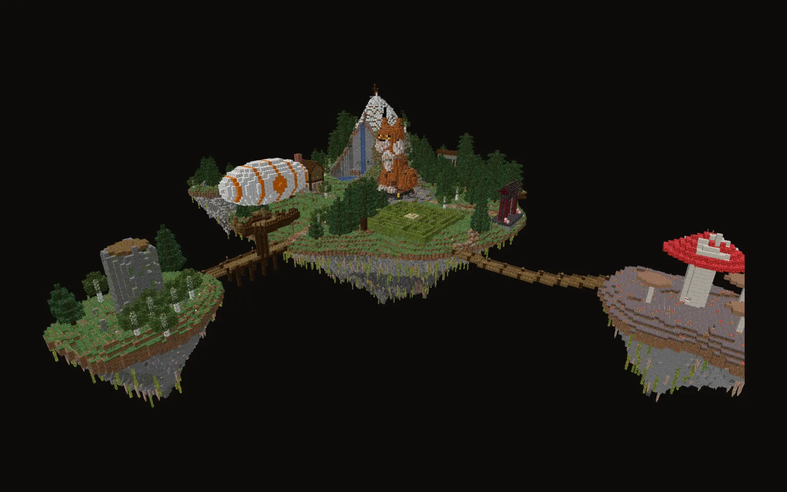

Die Luchsinsel.
Hier kommst du an. Eine schwebende Insel mit Berg, Wasserfall, Dorf und Irrgarten, verbunden über Hängebrücken mit drei Nebeninseln. In der Mitte wacht ein Luchs.
Mehr als ein Wartebereich.
Jeder Winkel lohnt sich. 20 Geheimnisse sind versteckt, jedes bringt 100 Coins, alle zusammen gibt es einen Bonus obendrauf. Ein paar verraten wir:
- Der Kopf der StatueNur über einen Sprungweg erreichbar.
- Hinter dem WasserfallEine Höhle im Berg.
- Die Unterwasser-GrotteTief im See.
- Der WeinkellerHinter dem Kamin der Taverne.
- Herobrines SchreinWo genau, musst du selbst herausfinden.
Spielzeug für zwischendurch.
Enterhaken
Auswerfen, festhaken, hinterherfliegen.
Perlen-Ritt
Reite auf einer Enderperle über die Insel.
Feuerwerkskanone & Sprungfeder
Für die Show und für hohe Sprünge.
Partikel & Hüte
Flammen, Herzen, Noten oder Schnee beim Laufen, dazu Hüte vom Kürbis bis zur Diamantkrone.
Ballons & Begleiter
Vier Ballons und zwei Begleiter: die Marktkatze und der Mini-Luchs.
Parkour „Himmelspfad“
Eine Spirale aus 48 Sprüngen über der Lobby, mit drei Checkpoints und Zeitmessung.
Von hier aus überallhin.
Über den Navigator oder die begehbaren Portale kommst du direkt nach CityBuild und in die Minigames.